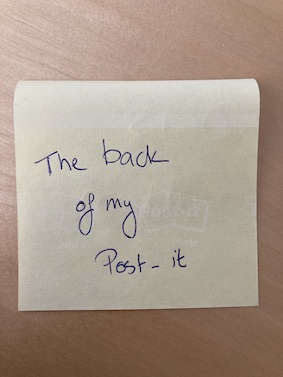
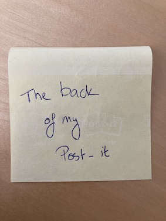
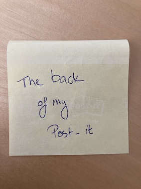
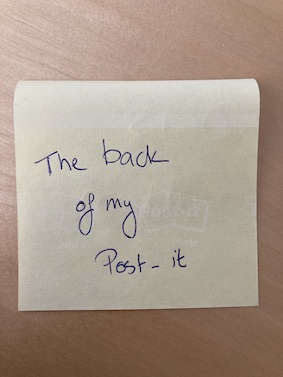

Description: Fosterländsk sång vid Götha Canals Öpnande i hans Maj:t Konungens och den Kongl. Famillens Närvaro, den 26 september 1832. Pontin Magnus Martin af 1781-1858 P. A. Norstedt & söner 1832 Stockholm Vallabiblioteket, Linköpings universitetsbibliotek Bokladan Har varit i Kungliga vattenfallsstyrelsens ägo, enligt etikett. Har varit i ytterligare en persons ägo, indikerat av etikett där det står Ex Libris och initialer.
Author:
Transcription by:
Jessica Hultengren, Magdalena af Trolle, Marie Gyll och Susanne Landén